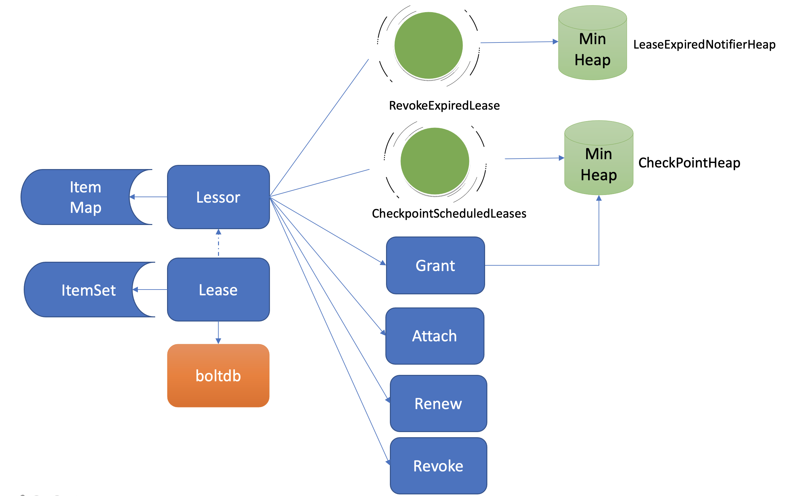
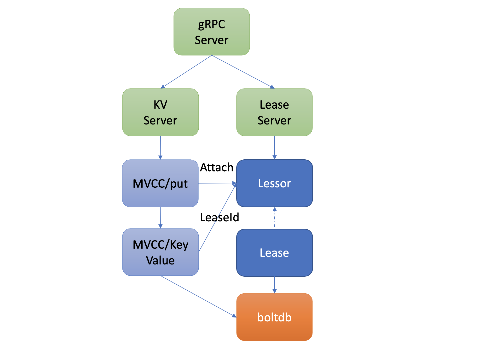
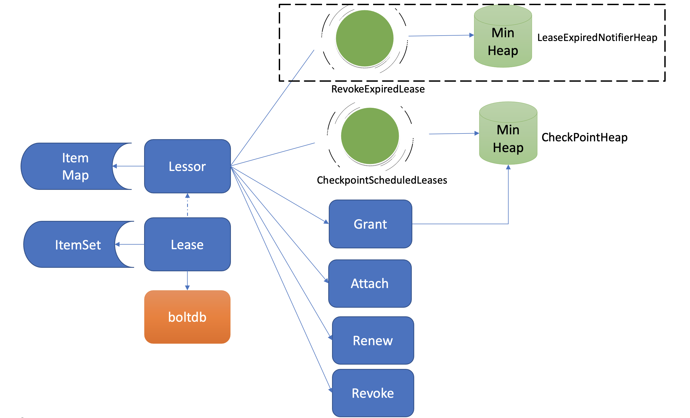
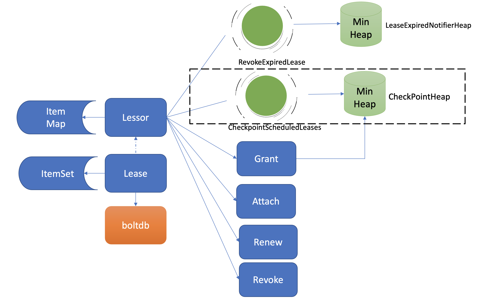

- 00 开篇词 为什么你要学习etcd_.md
- 01 etcd的前世今生：为什么Kubernetes使用etcd？.md
- 02 基础架构：etcd一个读请求是如何执行的？.md
- 03 基础架构：etcd一个写请求是如何执行的？.md
- 04 Raft协议：etcd如何实现高可用、数据强一致的？.md
- 05 鉴权：如何保护你的数据安全？.md
- 06 租约：如何检测你的客户端存活？.md
- 07 MVCC：如何实现多版本并发控制？.md
- 08 Watch：如何高效获取数据变化通知？.md
- 09 事务：如何安全地实现多key操作？.md
- 10 boltdb：如何持久化存储你的key-value数据？.md
- 11 压缩：如何回收旧版本数据？.md
- 12 一致性：为什么基于Raft实现的etcd还会出现数据不一致？.md
- 13 db大小：为什么etcd社区建议db大小不超过8G？.md
- 14 延时：为什么你的etcd请求会出现超时？.md
- 15 内存：为什么你的etcd内存占用那么高？.md
- 16 性能及稳定性（上）：如何优化及扩展etcd性能？.md
- 17 性能及稳定性（下）：如何优化及扩展etcd性能_.md
- 18 实战：如何基于Raft从0到1构建一个支持多存储引擎分布式KV服务？.md
- 19 Kubernetes基础应用：创建一个Pod背后etcd发生了什么？.md
- 20 Kubernetes高级应用：如何优化业务场景使etcd能支撑上万节点集群？.md
- 21 分布式锁：为什么基于etcd实现分布式锁比Redis锁更安全？.md
- 22 配置及服务发现：解析etcd在API Gateway开源项目中应用.md
- 23 选型：etcd_ZooKeeper_Consul等我们该如何选择？.md
- 24 运维：如何构建高可靠的etcd集群运维体系？.md
- 特别放送 成员变更：为什么集群看起来正常，移除节点却会失败呢？.md
- 结束语 搞懂etcd，掌握通往分布式存储系统之门的钥匙.md
06 租约：如何检测你的客户端存活？
你好，我是唐聪。
今天我要跟你分享的主题是租约（Lease）。etcd的一个典型的应用场景是Leader选举，那么etcd为什么可以用来实现Leader选举？核心特性实现原理又是怎样的？
今天我就和你聊聊Leader选举背后技术点之一的Lease， 解析它的核心原理、性能优化思路，希望通过本节让你对Lease如何关联key、Lease如何高效续期、淘汰、什么是checkpoint机制有深入的理解。同时希望你能基于Lease的TTL特性，解决实际业务中遇到分布式锁、节点故障自动剔除等各类问题，提高业务服务的可用性。
什么是Lease
在实际业务场景中，我们常常会遇到类似Kubernetes的调度器、控制器组件同一时刻只能存在一个副本对外提供服务的情况。然而单副本部署的组件，是无法保证其高可用性的。
那为了解决单副本的可用性问题，我们就需要多副本部署。同时，为了保证同一时刻只有一个能对外提供服务，我们需要引入Leader选举机制。那么Leader选举本质是要解决什么问题呢？
首先当然是要保证Leader的唯一性，确保集群不出现多个Leader，才能保证业务逻辑准确性，也就是安全性（Safety）、互斥性。
其次是主节点故障后，备节点应可快速感知到其异常，也就是活性（liveness）检测。实现活性检测主要有两种方案。
方案一为被动型检测，你可以通过探测节点定时拨测Leader节点，看是否健康，比如Redis Sentinel。
方案二为主动型上报，Leader节点可定期向协调服务发送”特殊心跳”汇报健康状态，若其未正常发送心跳，并超过和协调服务约定的最大存活时间后，就会被协调服务移除Leader身份标识。同时其他节点可通过协调服务，快速感知到Leader故障了，进而发起新的选举。
我们今天的主题，Lease，正是基于主动型上报模式，提供的一种活性检测机制。Lease顾名思义，client和etcd server之间存在一个约定，内容是etcd server保证在约定的有效期内（TTL），不会删除你关联到此Lease上的key-value。
若你未在有效期内续租，那么etcd server就会删除Lease和其关联的key-value。
你可以基于Lease的TTL特性，解决类似Leader选举、Kubernetes Event自动淘汰、服务发现场景中故障节点自动剔除等问题。为了帮助你理解Lease的核心特性原理，我以一个实际场景中的经常遇到的异常节点自动剔除为案例，围绕这个问题，给你深入介绍Lease特性的实现。
在这个案例中，我们期望的效果是，在节点异常时，表示节点健康的key能被从etcd集群中自动删除。
Lease整体架构
在和你详细解读Lease特性如何解决上面的问题之前，我们先了解下Lease模块的整体架构，下图是我给你画的Lease模块简要架构图。

etcd在启动的时候，创建Lessor模块的时候，它会启动两个常驻goroutine，如上图所示，一个是RevokeExpiredLease任务，定时检查是否有过期Lease，发起撤销过期的Lease操作。一个是CheckpointScheduledLease，定时触发更新Lease的剩余到期时间的操作。
Lessor模块提供了Grant、Revoke、LeaseTimeToLive、LeaseKeepAlive API给client使用，各接口作用如下:
- Grant表示创建一个TTL为你指定秒数的Lease，Lessor会将Lease信息持久化存储在boltdb中；
- Revoke表示撤销Lease并删除其关联的数据；
- LeaseTimeToLive表示获取一个Lease的有效期、剩余时间；
- LeaseKeepAlive表示为Lease续期。
key如何关联Lease
了解完整体架构后，我们再看如何基于Lease特性实现检测一个节点存活。
首先如何为节点健康指标创建一个租约、并与节点健康指标key关联呢?
如KV模块的一样，client可通过clientv3库的Lease API发起RPC调用，你可以使用如下的etcdctl命令为node的健康状态指标，创建一个Lease，有效期为600秒。然后通过timetolive命令，查看Lease的有效期、剩余时间。
# 创建一个TTL为600秒的lease，etcd server返回LeaseID
$ etcdctl lease grant 600
lease 326975935f48f814 granted with TTL(600s)
# 查看lease的TTL、剩余时间
$ etcdctl lease timetolive 326975935f48f814
lease 326975935f48f814 granted with TTL(600s)， remaining(590s)
当Lease server收到client的创建一个有效期600秒的Lease请求后，会通过Raft模块完成日志同步，随后Apply模块通过Lessor模块的Grant接口执行日志条目内容。
首先Lessor的Grant接口会把Lease保存到内存的ItemMap数据结构中，然后它需要持久化Lease，将Lease数据保存到boltdb的Lease bucket中，返回一个唯一的LeaseID给client。
通过这样一个流程，就基本完成了Lease的创建。那么节点的健康指标数据如何关联到此Lease上呢？
很简单，KV模块的API接口提供了一个”–lease”参数，你可以通过如下命令，将key node关联到对应的LeaseID上。然后你查询的时候增加-w参数输出格式为json，就可查看到key关联的LeaseID。
$ etcdctl put node healthy --lease 326975935f48f818
OK
$ etcdctl get node -w=json | python -m json.tool
{
"kvs":[
{
"create_revision":24，
"key":"bm9kZQ=="，
"Lease":3632563850270275608，
"mod_revision":24，
"value":"aGVhbHRoeQ=="，
"version":1
}
]
}
以上流程原理如下图所示，它描述了用户的key是如何与指定Lease关联的。当你通过put等命令新增一个指定了”–lease”的key时，MVCC模块它会通过Lessor模块的Attach方法，将key关联到Lease的key内存集合ItemSet中。

一个Lease关联的key集合是保存在内存中的，那么etcd重启时，是如何知道每个Lease上关联了哪些key呢?
答案是etcd的MVCC模块在持久化存储key-value的时候，保存到boltdb的value是个结构体（mvccpb.KeyValue）， 它不仅包含你的key-value数据，还包含了关联的LeaseID等信息。因此当etcd重启时，可根据此信息，重建关联各个Lease的key集合列表。
如何优化Lease续期性能
通过以上流程，我们完成了Lease创建和数据关联操作。在正常情况下，你的节点存活时，需要定期发送KeepAlive请求给etcd续期健康状态的Lease，否则你的Lease和关联的数据就会被删除。
那么Lease是如何续期的? 作为一个高频率的请求API，etcd如何优化Lease续期的性能呢？
Lease续期其实很简单，核心是将Lease的过期时间更新为当前系统时间加其TTL。关键问题在于续期的性能能否满足业务诉求。
然而影响续期性能因素又是源自多方面的。首先是TTL，TTL过长会导致节点异常后，无法及时从etcd中删除，影响服务可用性，而过短，则要求client频繁发送续期请求。其次是Lease数，如果Lease成千上万个，那么etcd可能无法支撑如此大规模的Lease数，导致高负载。
如何解决呢？
首先我们回顾下早期etcd v2版本是如何实现TTL特性的。在早期v2版本中，没有Lease概念，TTL属性是在key上面，为了保证key不删除，即便你的TTL相同，client也需要为每个TTL、key创建一个HTTP/1.x 连接，定时发送续期请求给etcd server。
很显然，v2老版本这种设计，因不支持连接多路复用、相同TTL无法复用导致性能较差，无法支撑较大规模的Lease场景。
etcd v3版本为了解决以上问题，提出了Lease特性，TTL属性转移到了Lease上， 同时协议从HTTP/1.x优化成gRPC协议。
一方面不同key若TTL相同，可复用同一个Lease， 显著减少了Lease数。另一方面，通过gRPC HTTP/2实现了多路复用，流式传输，同一连接可支持为多个Lease续期，大大减少了连接数。
通过以上两个优化，实现Lease性能大幅提升，满足了各个业务场景诉求。
如何高效淘汰过期Lease
在了解完节点正常情况下的Lease续期特性后，我们再看看节点异常时，未正常续期后，etcd又是如何淘汰过期Lease、删除节点健康指标key的。
淘汰过期Lease的工作由Lessor模块的一个异步goroutine负责。如下面架构图虚线框所示，它会定时从最小堆中取出已过期的Lease，执行删除Lease和其关联的key列表数据的RevokeExpiredLease任务。

从图中你可以看到，目前etcd是基于最小堆来管理Lease，实现快速淘汰过期的Lease。
etcd早期的时候，淘汰Lease非常暴力。etcd会直接遍历所有Lease，逐个检查Lease是否过期，过期则从Lease关联的key集合中，取出key列表，删除它们，时间复杂度是O(N)。
然而这种方案随着Lease数增大，毫无疑问它的性能会变得越来越差。我们能否按过期时间排序呢？这样每次只需轮询、检查排在前面的Lease过期时间，一旦轮询到未过期的Lease， 则可结束本轮检查。
刚刚说的就是etcd Lease高效淘汰方案最小堆的实现方法。每次新增Lease、续期的时候，它会插入、更新一个对象到最小堆中，对象含有LeaseID和其到期时间unixnano，对象之间按到期时间升序排序。
etcd Lessor主循环每隔500ms执行一次撤销Lease检查（RevokeExpiredLease），每次轮询堆顶的元素，若已过期则加入到待淘汰列表，直到堆顶的Lease过期时间大于当前，则结束本轮轮询。
相比早期O(N)的遍历时间复杂度，使用堆后，插入、更新、删除，它的时间复杂度是O(Log N)，查询堆顶对象是否过期时间复杂度仅为O(1)，性能大大提升，可支撑大规模场景下Lease的高效淘汰。
获取到待过期的LeaseID后，Leader是如何通知其他Follower节点淘汰它们呢？
Lessor模块会将已确认过期的LeaseID，保存在一个名为expiredC的channel中，而etcd server的主循环会定期从channel中获取LeaseID，发起revoke请求，通过Raft Log传递给Follower节点。
各个节点收到revoke Lease请求后，获取关联到此Lease上的key列表，从boltdb中删除key，从Lessor的Lease map内存中删除此Lease对象，最后还需要从boltdb的Lease bucket中删除这个Lease。
以上就是Lease的过期自动淘汰逻辑。Leader节点按过期时间维护了一个最小堆，若你的节点异常未正常续期，那么随着时间消逝，对应的Lease则会过期，Lessor主循环定时轮询过期的Lease。获取到ID后，Leader发起revoke操作，通知整个集群删除Lease和关联的数据。
为什么需要checkpoint机制
了解完Lease的创建、续期、自动淘汰机制后，你可能已经发现，检查Lease是否过期、维护最小堆、针对过期的Lease发起revoke操作，都是Leader节点负责的，它类似于Lease的仲裁者，通过以上清晰的权责划分，降低了Lease特性的实现复杂度。
那么当Leader因重启、crash、磁盘IO等异常不可用时，Follower节点就会发起Leader选举，新Leader要完成以上职责，必须重建Lease过期最小堆等管理数据结构，那么以上重建可能会触发什么问题呢？
当你的集群发生Leader切换后，新的Leader基于Lease map信息，按Lease过期时间构建一个最小堆时，etcd早期版本为了优化性能，并未持久化存储Lease剩余TTL信息，因此重建的时候就会自动给所有Lease自动续期了。
然而若较频繁出现Leader切换，切换时间小于Lease的TTL，这会导致Lease永远无法删除，大量key堆积，db大小超过配额等异常。
为了解决这个问题，etcd引入了检查点机制，也就是下面架构图中黑色虚线框所示的CheckPointScheduledLeases的任务。

一方面，etcd启动的时候，Leader节点后台会运行此异步任务，定期批量地将Lease剩余的TTL基于Raft Log同步给Follower节点，Follower节点收到CheckPoint请求后，更新内存数据结构LeaseMap的剩余TTL信息。
另一方面，当Leader节点收到KeepAlive请求的时候，它也会通过checkpoint机制把此Lease的剩余TTL重置，并同步给Follower节点，尽量确保续期后集群各个节点的Lease 剩余TTL一致性。
最后你要注意的是，此特性对性能有一定影响，目前仍然是试验特性。你可以通过experimental-enable-lease-checkpoint参数开启。
小结
最后我们来小结下今天的内容，我通过一个实际案例为你解读了Lease创建、关联key、续期、淘汰、checkpoint机制。
Lease的核心是TTL，当Lease的TTL过期时，它会自动删除其关联的key-value数据。
首先是Lease创建及续期。当你创建Lease时，etcd会保存Lease信息到boltdb的Lease bucket中。为了防止Lease被淘汰，你需要定期发送LeaseKeepAlive请求给etcd server续期Lease，本质是更新Lease的到期时间。
续期的核心挑战是性能，etcd经历了从TTL属性在key上，到独立抽象出Lease，支持多key复用相同TTL，同时协议从HTTP/1.x优化成gRPC协议，支持多路连接复用，显著降低了server连接数等资源开销。
其次是Lease的淘汰机制，etcd的Lease淘汰算法经历了从时间复杂度O(N)到O(Log N)的演进，核心是轮询最小堆的Lease是否过期，若过期生成revoke请求，它会清理Lease和其关联的数据。
最后我给你介绍了Lease的checkpoint机制，它是为了解决Leader异常情况下TTL自动被续期，可能导致Lease永不淘汰的问题而诞生。
思考题
好了，这节课到这里也就结束了，我最后给你留了一个思考题。你知道etcd lease最小的TTL时间是多少吗？它跟什么因素有关呢？
感谢你的阅读，如果你认为这节课的内容有收获，也欢迎把它分享给你的朋友，谢谢。
© 2019 - 2023 Liangliang Lee. Powered by gin and hexo-theme-book.